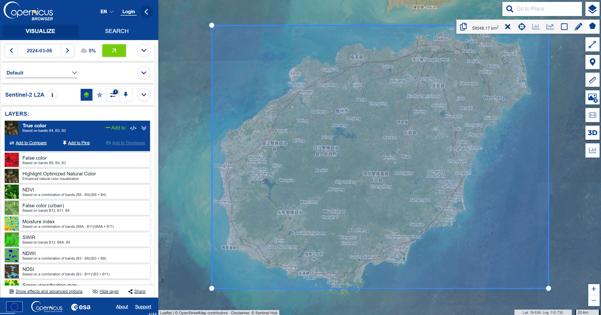
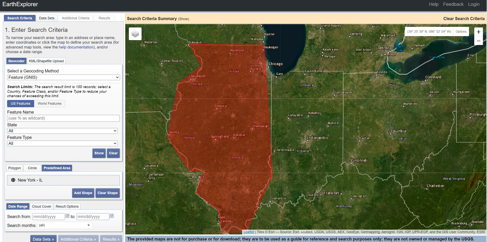

This is the first week of the learning diary, this week’s main focus is on learning Landsat and Sentinel data acquisition; basic raster image statistics and processing; and statistical analysis of spectral features.
1 Summary
1.1 Sentinel data and Landsat data
Sentinel: The Sentinel series of satellites is part of Europe’s Global Monitoring for Environmental Security (Copernicus programme), led by ESA.The Sentinel project is designed to provide data for a wide range of environmental and security monitoring, including land, oceans and the atmosphere. Of these, Sentinel-1, Sentinel-2 and Sentinel-3 are satellites that provide primarily terrestrial data.

Landsat: The programme has been in operation since 1972 and is the world’s longest land observation satellite project.The Landsat project is jointly managed by NASA and the United States Geological Survey (USGS).The Landsat series of satellites has a long history, with Landsat 8 and Landsat 9 currently active.

1.1.1 The differences between Landsat and Sentinel data
In addition to the most obvious differences in the Managing Agencies of the two types of satellite data, they also have specialised differences such as Spatial Resolution; Temporal Resolution; and Spectral Bands.
Spatial Resolution
Landsat satellites, particularly the Landsat 8 and Landsat 9 missions, offer a spatial resolution of 15 meters for panchromatic (black and white) imagery, 30 meters for multispectral bands, and 100 meters for thermal bands.The Sentinel satellites include multiple missions with varying capabilities. Sentinel-2, for example, offers higher-resolution data with 10 meters for visible and near-infrared bands, 20 meters for additional infrared bands, and 60 meters for shortwave infrared bands.
Temporal Resolution
Landsat satellites, particularly the Landsat 8 and Landsat 9 missions, offer a spatial resolution of 15 meters for panchromatic (black and white) imagery, 30 meters for multispectral bands, and 100 meters for thermal bands.The Sentinel satellites include multiple missions with varying capabilities. Sentinel-2, for example, offers higher-resolution data with 10 meters for visible and near-infrared bands, 20 meters for additional infrared bands, and 60 meters for shortwave infrared bands.
Spectral Bands
The combined Landsat 7 and Landsat 8 missions provide a revisit time of 8 days at the equator, and this improves with the addition of Landsat 9. The Sentinel-2 mission has two satellites (2A and 2B) working in tandem, offering a revisit time of 5 days at the equator, which is more frequent than Landsat.
Primary Uses
While Sentinel data are also used for applications similar to Landsat, including monitoring deforestation, glacier dynamics, urban sprawl, and land use and land cover change, they have specific tasks tailored for different purposes, such as Sentinel-1 for radar imagery (which can be used to monitor sea ice, oil spills, and land motion), and Sentinel-3 for sea ice monitoring, oil spills, and land motion, Ocean and global land monitoring.
1.2 Spectral signatures
Spectral feature space is widely used in the analysis and processing of remote sensing data, especially in feature classification, target identification, vegetation monitoring, and water quality analysis. By analysing the reflectance or radiation characteristics of targets in different spectral bands, different materials and objects on the surface can be effectively distinguished and identified. In practical applications, the selection of effective spectral bands is the key to improving classification accuracy. By analysing the spectral feature space, it is possible to determine which bands are best able to distinguish between features or materials of interest. Meanwhile, since remote sensing data may contain a large number of spectral bands, it is very complex and computationally intensive to process this high-dimensional data directly. Therefore, data dimensionality reduction techniques (e.g., principal component analysis, PCA) are often used to reduce the dimensionality of the data while retaining as much information as possible that is needed to distinguish between features.
1.3 Grating Processing and Spectral Spatial Characterisation Considerations
1.3.1 Issues to keep in mind when raster processing
Spatial resolution: choosing the right spatial resolution is critical to the results of the analysis. Too low a resolution may result in the loss of important details, while too high a resolution may increase the computational effort and introduce noise.
Data integration and alignment errors: When using multiple data sources, it is essential to ensure accurate alignment between the different raster layers, as failure to do so may lead to biased analysis results.
Data volume and processing power: raster data can be very large and require sufficient computational resources for efficient processing. An increase in data volume can significantly affect processing times and storage requirements.
Radiometric and atmospheric corrections: In order to obtain true surface reflectance, radiometric and atmospheric corrections need to be applied to remotely sensed data to remove effects due to variations in sensor and atmospheric conditions.
1.3.2 Issues to be noted in spectral spatial characterisation
Wavelength band selection: different substances have different reflection and absorption properties at specific wavelength bands. Choosing the most sensitive band to the research target is the key to improving the accuracy of the analysis.
Spectral mixing: In practice, a pixel may contain a mixture of spectral signals from multiple features, which will affect the extraction and analysis of spectral features.
Temporal variations: The spectral features of features may change over time, such as seasonal variations, vegetation growth cycles, etc., which need to be taken into account when performing temporal analyses.
Spectral resolution: Spectral resolution is equally important for identifying and classifying features. Hyperspectral remote sensing data provide more detailed spectral information, but also bring higher data processing requirements.
2 Application
The study of Hemati, M.(2021) surveys 50 years of Landsat data applications, emphasizing the role of Landsat in monitoring Earth’s surface changes. It underscores the importance of Landsat for governmental and international organizations in monitoring and understanding the dynamics of the Earth’s surface, crucial for management, scientific inquiry, and policy.
Guyon, D. et al. (2015)’s research highlights the utility of Landsat data for long-term forest monitoring and management, especially in regions like the Landes Forest, where the management practices and natural events significantly impact forest structure and productivity.
3 Personal Reflections
This week has introduced many introductory aspects of remote sensing, and in addition to the considerations already listed above, it is important to be aware of the following issues, and to adopt appropriate strategies and measures in raster processing and spectral spatial characterisation, so that the efficiency and accuracy of the analysis of remotely sensed data can be significantly improved:
Data quality: data quality directly affects the accuracy of analysis results. Attention needs to be paid to the data acquisition conditions, sensor stability, and the quality of data preprocessing.
Model and Algorithm Selection: Different analysis objectives and data types may require different models and algorithms. Choosing the right method is critical to obtaining reliable analysis results.
Validation and Evaluation: Evaluating the accuracy and reliability of the analysis results by comparing and validating them with real data on the ground is an important step to ensure the validity of the research results.